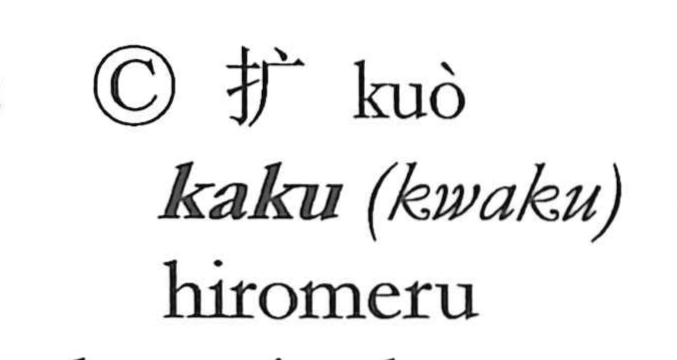

拡

Kun: hiromeru, hirogeru, hirogaru | On: kaku
to expand ・ to enlarge ・ to widen
Explanation
Originally written 擴, this is a phono-semantic character. The element 広/廣 depicts a spacious, wide building and supplies the idea of breadth, while also signaling the Sino-Japanese reading. By adding the hand classifier 手, the graph turns that quality into an action—making something wide—so the reading shifts slightly as the adjective becomes a verb. The older form 彍, meaning to draw a bow to its fullest, reinforces the image of stretching to the utmost. Hence 拡 came to mean to make wide and big: to enlarge and to expand.